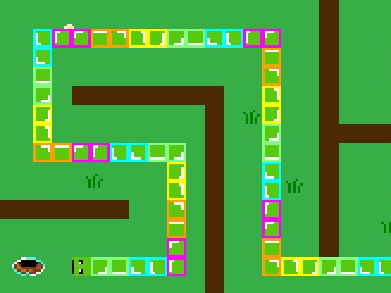

Games
Here are games I made or worked on over the past couple years, ordered by how good I think they are. Most of them are playable in a web browser. Also, check out my GameJolt profile.
It's Cold Outside, Where is the Cat?
Platform: Browser/HTML5 using MelonJS
Released: February 2014
Description: Dig your way through blocks of ice searching for your friend the cat. Collect bones for extra time, gold for points, or powerups for faster searching. The game was implemented in JavaScript using MelonJS, an open-source HTML5 game library.
Piggies?!

Platform: Browser/HTML5 using MelonJS
Released: April 2014
Description: Piggies was born as an April Fool's joke in 2014, heavily inspired by my friend posting the Goat Simulator trailer soundtrack on Facebook that morning. I would have to write original music to put it on GameJolt, but it sounds pretty amazing with the Goat Simulator soundtrack so I won't do that anytime soon. As a disclaimer, this game is really odd and doesn't make sense. Don't say I didn't warn you!
Tommy Tubbies (NSFW language)

Platform: Unity3D
Released: March 2015
Collaborator: Stephanie Lin
Description: Tommy Tubbies is a point-and-click adventure about a young and emotionally volatile boy who finds himself in a nightmare about the kids' TV show his baby sister watches. Some of the control is clunky and there is no audio, but this game offers a complete narrative with two endings. Created for the Game Design Methods class at UC Berkeley.
Giles the Picky Predator
Platform: Game Maker
Released: December 2013
Description: Giles was intended to be an entry to Ludum Dare 28, with the theme "you only get one." I finished too late to enter the competition, but I was able to write an original soundtrack and the game turned out great. Giles is a Snake clone but with a puzzle-oriented twist: in each level, you must eat the mouse, which is Giles' favorite food. Once you do though Giles will grow uncontrollably, so make sure you can find a way back home! Finishing each level earns a silver medal. Eating all the frogs and rabbits in a level merits a gold medal.
CoffeeBox
Platform: Browser/HTML5
Released: June 2014
Description: CoffeeBox is an experimental pseudo- 3d game developed for LowRezJam 2014, a competition which challenged developers to create a game with 32x32 pixel resolution. CoffeeBox is a 3d platformer with a top-down view. Each pixel represents a block in the 3d world which the player can stand on and jump from. Blocks further below the player are represented as darker pixels in-game. The player must explore the small world and collect all of the glowing coffee beans. Overall the game is rather difficult to play because of the small resolution and awkward representation of 3d-space, but conceptually it is interesting and in a few places in the game it looks very nice. A list of JS libraries I used to implement the game can be found on its GameJolt page.
Cash Out
Platform: Browser/HTML5
Released: April 2015
Collaborator: William Wu
Description: Cash Out was developed as a final project for a personal finance class I took at UC Berkeley. It is unpredictable and thus not very fun, but inside it contains a semi- interesting model of how people decide how much life insurance coverage to have based on their income, age, and number of dependents. The game is written entirely in HTML5/CSS/JS using a bit of JQuery.